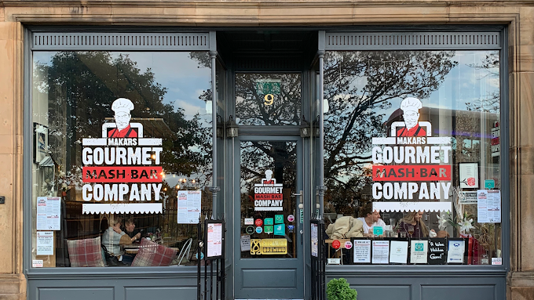
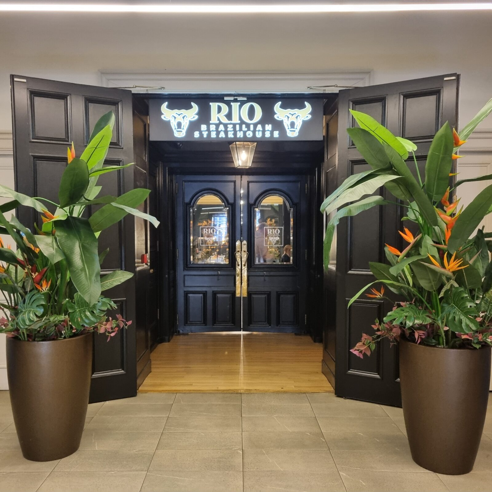
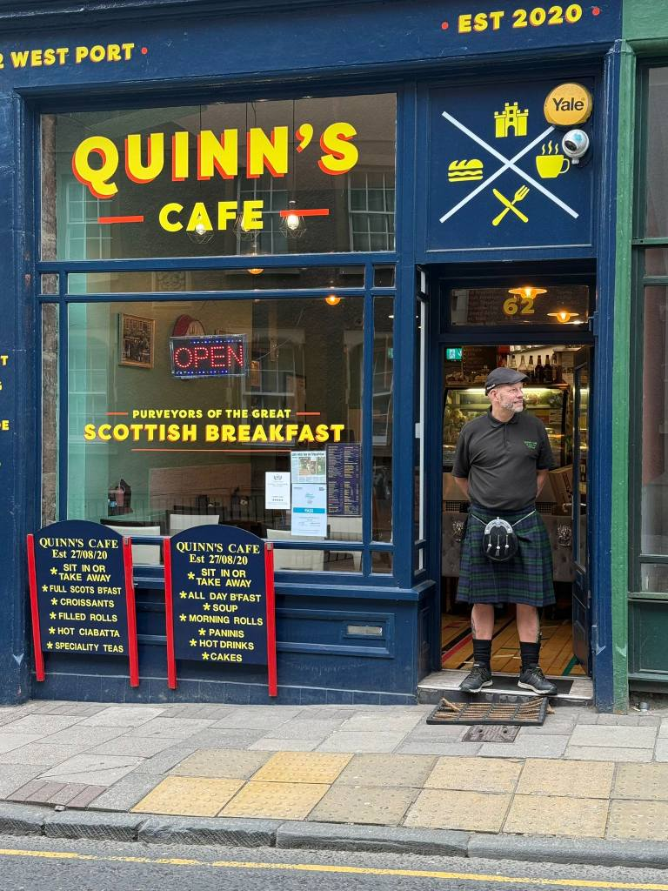

Restaurant Details
Here is a summary of some popular Edinburgh restaurants including opening hours, price range, and customer rating.
| Restaurant | Opening Hours | Price | Rating |
|---|---|---|---|
| Malt Shovel Inn | 12:00 PM – 11:00 PM | $12–$30 | ★★★★☆ |
| 1802 Lounge & Grill | 11:30 AM – 10:30 PM | $18–$42 | ★★★★☆ |
| Locanda De Gusti | 12:00 PM – 10:00 PM | $24–$48 | ★★★★☆ |
| Makars Gourmet Mash | 12:00 PM – 9:30 PM | $14–$34 | ★★★★☆ |
| Rio Brazilian Steakhouse | 5:00 PM – 11:00 PM | $30–$60 | ★★★★☆ |
| The Tollhouse | 12:00 PM – 10:00 PM | $18–$36 | ★★★★☆ |
| The World's End | 11:00 AM – 11:00 PM | $12–$30 | ★★★☆☆ |
| Quinn's Cafe | 8:00 AM – 4:00 PM | $6–$18 | ★★★★☆ |
Malt Shovel Inn

A traditional Scottish pub known for its warm, welcoming atmosphere and classic comfort food. It is a great place to enjoy hearty dishes and a good selection of ales in the heart of Edinburgh.
1802 Lounge & Grill

It offers modern Scottish and grill-style dishes in a relaxed, stylish setting. It is known for its quality steaks, fresh local ingredients, and comfortable lounge atmosphere perfect for a casual dining experience.
Locanda De Gusti

Locanda is an authentic Neapolitan restaurant known for fresh seafodd, handmade pasta, and traditional Southern Italian dishes. It offers a warm, family-run atmosphere that makes it feel like a true Italian dining experience in the center of Edinburgh.
Makars Gourmet Mash Bar
A popular Scottish spot famous for its creative mashed potato dishes paired with hearty mains. It is a cozy place to enjoy comfort food made from local ingredients.
Rio Brazilian Steakhouse
A lively Brazilian restaurant offereing all you can eat meats carved tableside. Guests can enjoy a wide variety of grilled cuts along with a fresh salad and sides bar.
The Tollhouse

A charming riverside restaurant known for its seasonal Scottish dishes and relaxed atmosphere. It combines modern dining with views of the Water of Leith.
The World's End

A historic pub serving classic Scottish meals in a cozy, old-town atmosphere. It sits at the edge of the Royal Mile where Edinburgh's ancient city walls once stood.
Quinn's Cafe
A friendly local cafe known for hearty breakfasts, homemade lunches, and welcoming service. It is a popular stop for simple affordable Scottish comfort food.